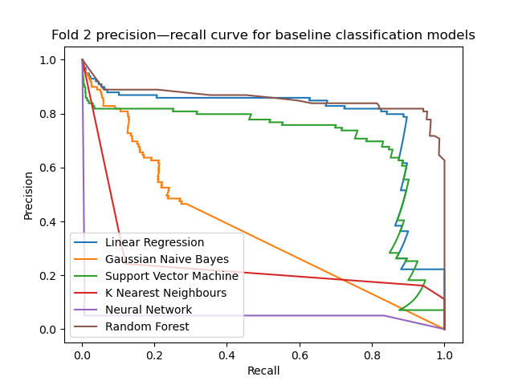
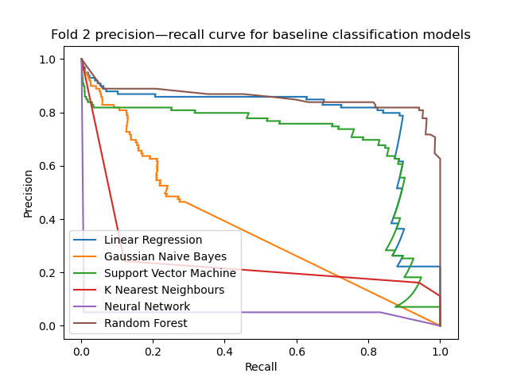
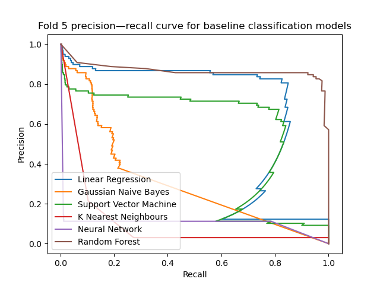
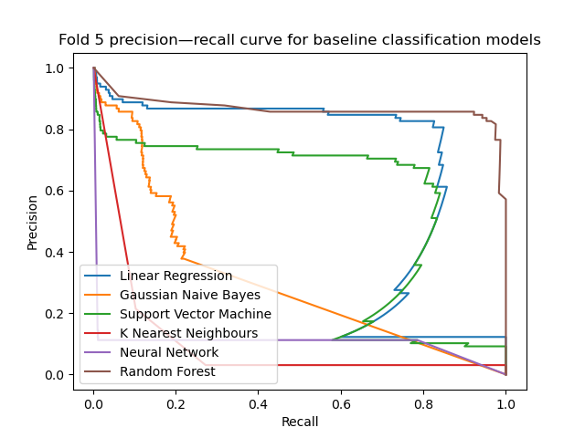

Baseline Model
We're now ready to evaluate some models and see which seem to be most promising. We'll then take the models that perform best, try to understand why, and work to improve these models even further.
As we discussed previously, we will perform cross-validation using a stratified \(k\)-fold method. As discussed in the Exploratory Data Analysis, we will compare the classifiers using the precision–recall curve and the average precision score, which represents the area under the curve. The score gives us a single number to summarise the curve, and roughly speaking, larger scores are better.
We will try a broad variety of "off-the-shelf" models which should give us a reasonable idea about which models are promising. In particular, we will try:
- linear regression models;
- random forest ensemble models;
- neural network models;
- neighbour models;
- support vector machine models; and
- naive Bayes models.
import matplotlib.pyplot as plt
from sklearn.linear_model import LinearRegression
from sklearn.neighbors import KNeighborsClassifier
from sklearn.neural_network import MLPClassifier
from sklearn.ensemble import RandomForestClassifier
from sklearn.naive_bayes import GaussianNB
from sklearn.svm import LinearSVC
from sklearn.model_selection import StratifiedKFold
from sklearn.metrics import average_precision_score, precision_recall_curve
from os import path
from util import load_data, get_confidence, BOOK_PATH
classifiers = [
('Linear Regression', LinearRegression()),
('Gaussian Naive Bayes', GaussianNB()),
('Support Vector Machine', LinearSVC(dual=False)),
('K Nearest Neighbours', KNeighborsClassifier()),
('Neural Network', MLPClassifier(random_state=0)),
('Random Forest', RandomForestClassifier(n_jobs=-1, random_state=0))
]
# load_data() is a helper to load the dataset into memory and partition into
# features and targets. We will use this throughout and the full code is available
# in the source folder.
X, y = load_data()
# We use a stratified fold to ensure that the class balance is preserved.
# Otherwise we could have the validation data having a greater or smaller
# number of fraudulent cases, which would affect the generalisation score.
k_fold = StratifiedKFold(n_splits=5, shuffle=True, random_state=0)
print(' Average precision score ')
print('-------------------------------------')
print('Fold Classifier Score')
for i, (train_index, test_index) in enumerate(k_fold.split(X, y)):
# Use the indices given by the StratifiedKFold to generate train and
# test sets.
X_train, X_test = X.iloc[train_index, :], X.iloc[test_index, :]
y_train, y_test = y[train_index], y[test_index]
# Begin a new figure which will hold the precision–recall curve, then iterate
# through all classifiers to fit and test performance.
plt.figure()
for name, classifier in classifiers:
classifier.fit(X_train, y_train)
# get_confidence is another helper function. As some models can output scores using
# predict_proba, while others only support decision_function (or in the case of using
# a regression model to estimate a score, predict), this function determines the
# appropriate method of obtaining some numerical score from the model.
#
# We will use get_confidence throughout the rest of this section.
y_score = get_confidence(classifier, X_test)
print(f'{i + 1:<6} {name:<24} {average_precision_score(y_test, y_score):.3f}')
# The precision_recall_curve will test the performance of the model at different
# thresholds.
curve = precision_recall_curve(y_test, y_score)
plt.plot(curve[0], curve[1], label=name)
# Label and save precision–recall plot.
plt.legend(loc='lower left')
plt.title(f'Fold {i + 1} precision—recall curve for baseline classification models')
plt.xlabel('Recall')
plt.ylabel('Precision')
plt.savefig(path.join(BOOK_PATH, 'images', f'fold{i + 1}.png'))
print()
Output
 


 

We see that the random forest classifier achieves the greatest area under the curve on every fold. The linear models are fairly consistent and never perform too badly. An interesting case is the neural network, which tended to learn well on some folds, and on others performed extremely poorly. This might be because the training algorithm (which uses backpropagation behind the scenes) is finding a local minimum which turns out to be particularly poor.
We'll certainly want to consider the random forest model going forward, but some experimentation might be needed in order to obtain good results from the other models.
In the next section, we'll begin to preprocess the data by scaling it. This should prove to be an easy step which vastly increases the performance of some of our models.